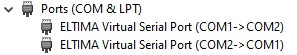
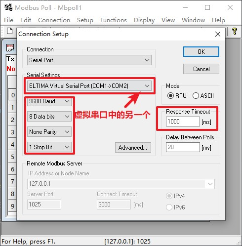
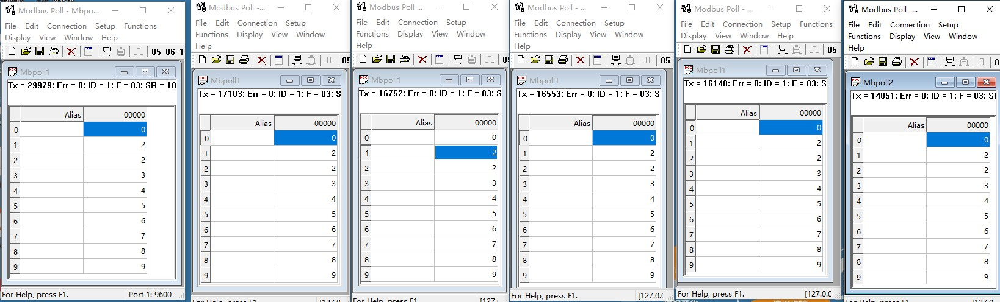

1、介绍
该示例提供 RTU / TCP 主机和从机的功能演示。
WSL 或 Linux 下使用 gcc 可直接 make all 编译出所有示例，在电脑上运行测试程序。
目录结构：
| 名称 | 说明 |
|---|---|
| common | 公用源码 |
| figures | 素材 |
| rtu_master | RTU 主机示例 |
| tcp_master | TCP 主机示例 |
| slave | RTU + TCP 从机示例 |
| rtu_p2p | RTU 点对点传输文件 |
| rtu_broadcast | RTU 广播传输文件 (粘包处理示例) |
2、使用
需要准备的工具如下：
- 虚拟串口软件
- Modbus Poll
- Modbus Slave
命令行敲击 make clean 、 make all 。
2.1、主机
- RTU (rtu_master)
使用虚拟串口软件虚拟出一对串口

打开
Modbus Slave，按下图设置
Modbus Slave连接，按下图设置
进入
rtu_master目录，./RtuMaster /dev/ttySX运行RTU主机示例，ttySX为一对虚拟串口中的另一个
- TCP (tcp_master)
- 打开
Modbus Slave，SetUp设置同RTU一致 Modbus Slave连接，按下图设置
进入
tcp_master目录，./TcpMaster 127.0.0.1 502运行TCP主机示例
- 打开
2.2、从机
- 该示例 (slave) 同时提供
RTU和TCP从机功能演示，控制的是同一片内存。TCP最大可接入 5 个客户端，每个客户端无数据超时为 10s, 10s 后自动断开。 - 示例支持所有功能码(除了功能码 0x07)。
- 对
bit、input_bit、register、input_register寄存器每个文件单独定义。 - 使用
agile_modbus_slave_util_callback。 - 寄存器地址域：
| 寄存器 | 地址范围 |
|---|---|
| 线圈寄存器 | 0x041A ~ 0x0423 (1050 ~ 1059) |
| 离散量输入寄存器 | 0x041A ~ 0x0423 (1050 ~ 1059) |
| 保持寄存器 | 0xFFF6 ~ 0xFFFF (65526 ~ 65535) |
| 输入寄存器 | 0xFFF6 ~ 0xFFFF (65526 ~ 65535) |
注意: 读写其他地址寄存器都能成功，但值都为 0。
使用：
使用虚拟串口软件虚拟出一对串口
进入
slave目录，./ModbusSlave /dev/ttyS2 1025运行示例/dev/ttySX: 虚拟串口中的一个
1025：监听端口号，如果不是
root权限，端口号必须大于1024打开
Modbus Poll按下图设置和连接 RTU

打开 5 个
Modbus Poll，设置同 RTU，连接如下图
效果演示

超时断开演示
将
Modbus Poll的 poll 界面关闭，看控制台打印可以看到 close 报文。
2.3、RTU 传输文件

使用 0x50 作为传输文件的特殊功能码。
分包传输文件数据，每包数据最大 1024 字节。
Data 字段协议定义：
- 主机请求
| 命令 | 字节数 | 数据 |
|---|---|---|
| 2 Bytes | 2 Bytes | N Bytes |
命令:
| 命令 | 说明 | 数据 |
|---|---|---|
| 0x0001 | 开始发送 | 文件大小(4 Bytes) + 文件名称(字符串) |
| 0x0002 | 传输数据 | 标志(1 Byte) + 文件数据 |
标志:
| 状态 | 说明 |
|---|---|
| 0x00 | 最后一包数据 |
| 0x01 | 不是最后一包数据 |
- 从机响应
| 命令 | 状态 |
|---|---|
| 2 Bytes | 1 Byte |
状态:
| 状态 | 说明 |
|---|---|
| 0x00 | 失败 |
| 0x01 | 成功 |
使用虚拟串口软件虚拟出 3 个串口，组成串口群组
这里我使用的时 MX 虚拟串口

2.3.1、点对点传输
进入
rtu_p2p目录，打开Linux Shell，演示效果如下注意:
- 传输的文件必须是一般文件，像可执行文件、目录等不支持
- 文件路径必须是
Linux环境下的路径 - 从机接收到数据后修改文件名称 (从机地址_原文件名) 写入在当前目录。

2.3.2、广播传输
该例子主要演示 agile_modbus_slave_handle 中 frame_length 的用处。
broadcast_master 中，使用广播地址 0，周期 5ms 发送数据包。同时每包数据后都发送 100 字节的脏数据。
在如此快速的数据流下，broadcast_slave 必须使用 agile_modbus_slave_handle 中 frame_length 参数来对粘包进行处理。
进入
rtu_broadcast目录，打开Linux Shell，演示效果如下注意:
- 传输的文件必须是一般文件，像可执行文件、目录等不支持
- 文件路径必须是
Linux环境下的路径 - 从机接收到数据后修改文件名称 (从机地址_原文件名) 写入在当前目录。